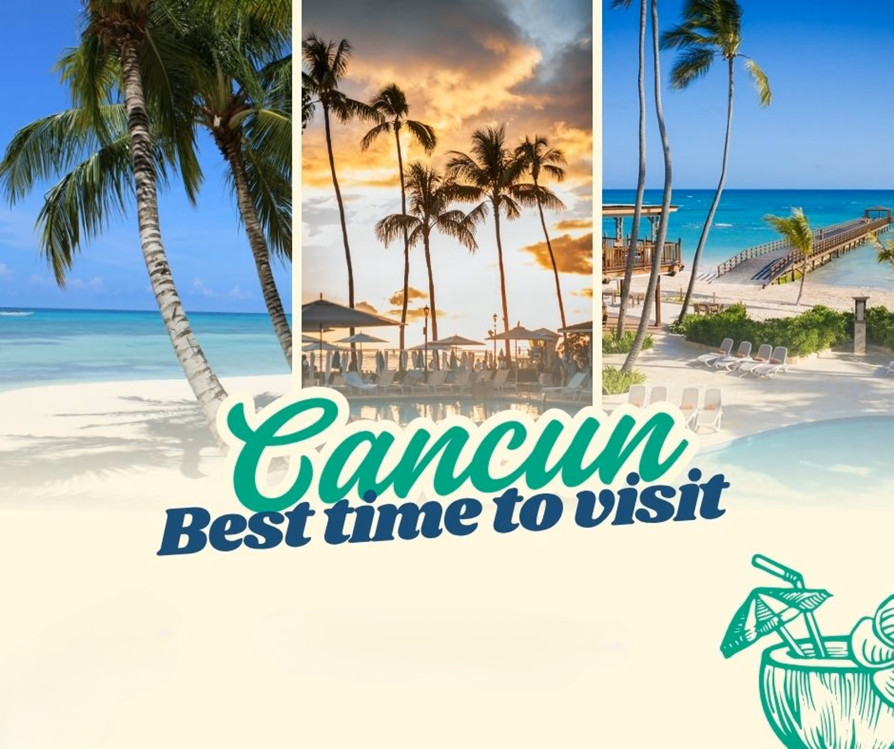
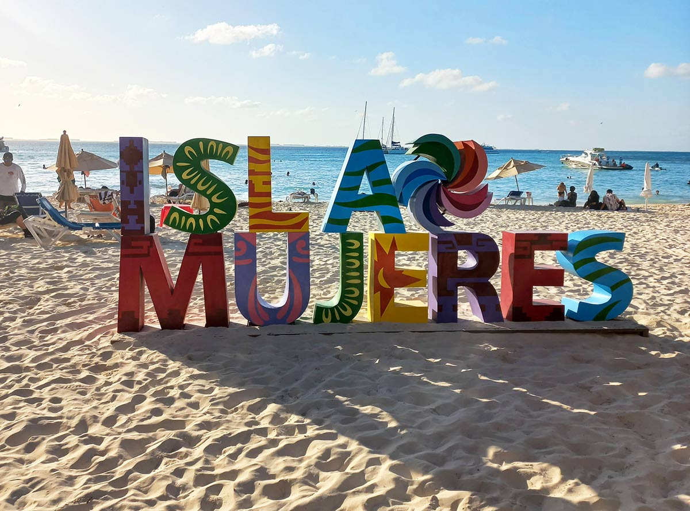
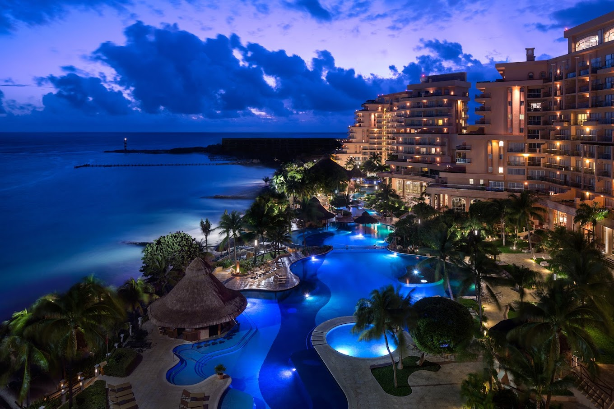
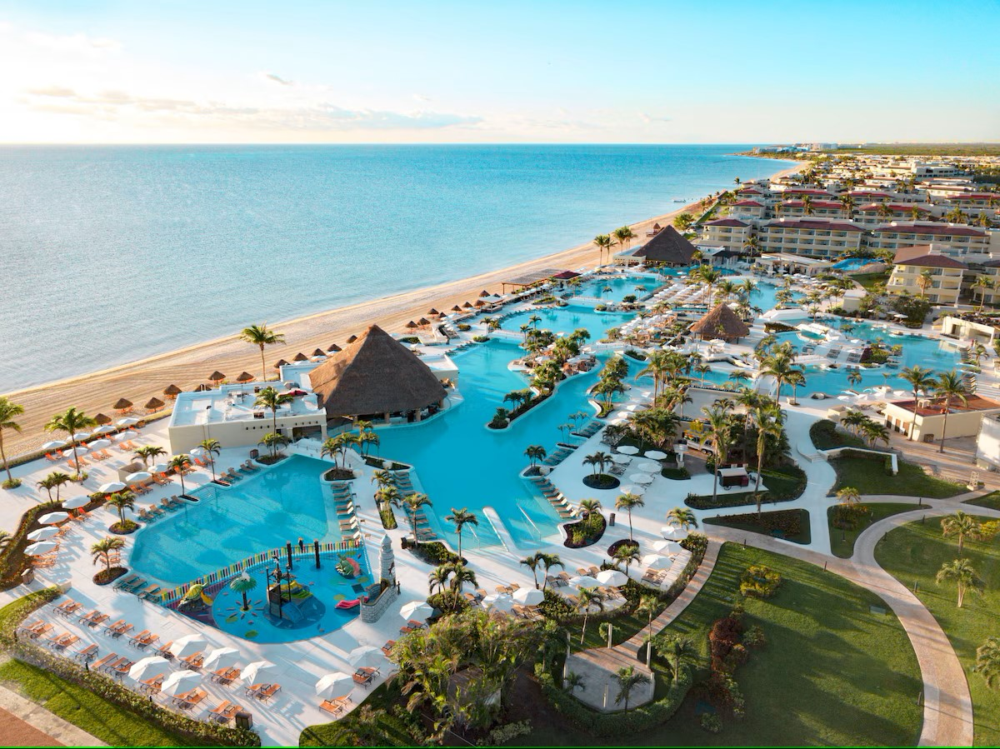
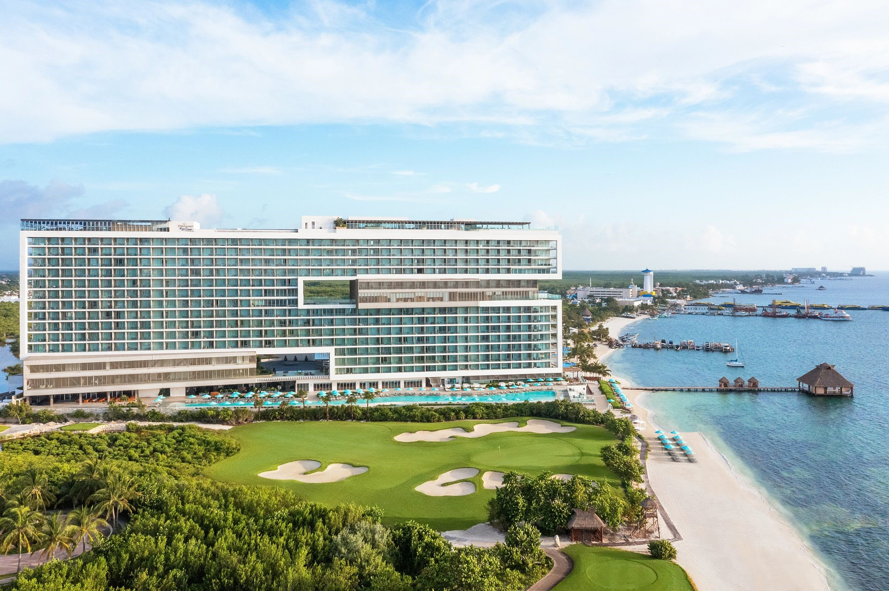
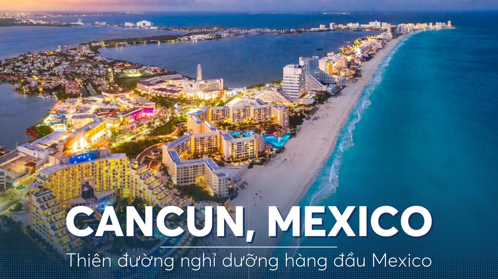
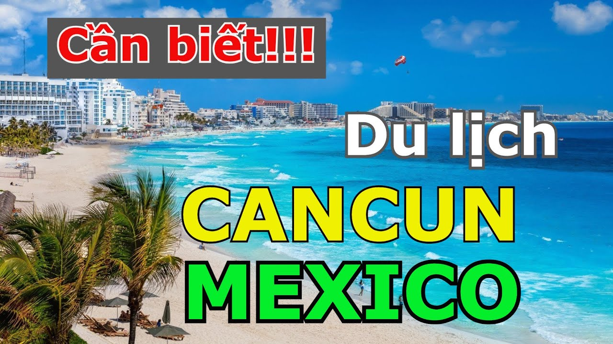
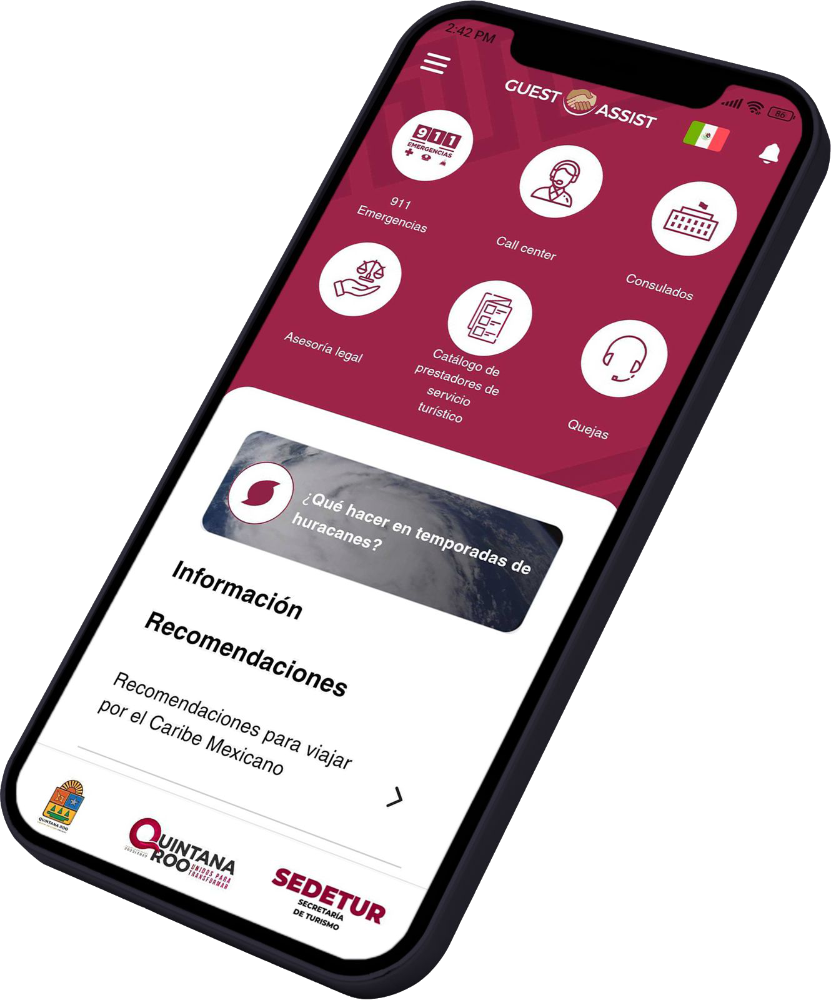

Tổng quan:
Thời điểm tốt nhất để đến thăm Cancun là từ tháng 12 đến tháng 4. Trong khoảng thời gian này, thời tiết ở Cancun rất lý tưởng, với nhiệt độ dễ chịu và ít mưa, thích hợp cho các hoạt động ngoài trời và tham quan
- 🔎 Chuyến bay Từ: Sân bay Quốc tế Dulles (IAD) hoặc Sân bay Quốc gia Reagan (DCA) - Sân bay Quốc tế Cancún (CUN)
- Hãng hàng không: American, United, JetBlue, Delta, Southwest, Frontier
- Thời lượng: ~4–6 giờ (không dừng hoặc 1 điểm dừng)
- Khứ hồi: Khoảng 250–500 USD tùy theo mùa
- 🕒 Mẹo: Đặt trước ít nhất 4–8 tuần để có giá tốt.

Điểm đến nổi bật ở Cancún
- Bãi biển: Playa Delfines, Playa Tortugas
- Isla Mujeres: Đi thuyền trong ngày (~ 0 khứ hồi)
- Chichen Itza: Tàn tích của người Maya (cách đó khoảng 2 giờ)
- Xcaret/Xel-Há: Công viên sinh thái, tuyệt vời cho gia đình
- Cenotes: Bơi trong các hố sụt đá vôi tự nhiên
- Khu trung tâm Cancún (El Centro): Chợ địa phương & văn hóa
- Cuộc sống về đêm ở Khu Khách sạn: Coco Bongo, Mandala, Señor Frog’s

🏨 Khách sạn/Khu nghỉ dưỡng ở Cancún
- Hyatt Ziva Cancún, khu nghỉ dưỡng sang trọng thân thiện với gia đình tốt nhất
- Ăn uống: Hơn 8 nhà hàng (nhà hàng bít tết, châu Á, Ý, buffet, tráng miệng)
- Điểm nổi bật: Mặt biển, công viên nước cho trẻ em, khu trưng bày cá heo, dịch vụ phòng 24/7
- Khoảng giá: Website
- Các trang web đặt phòng: Expedia, Booking.com, Airbnb, Costco Travel

- Grand Fiesta Americana Coral Beach Cancún. Tuyệt vời cho gia đình và những người yêu thích ẩm thực
- Ăn uống: Hơn 10 nhà hàng (Pháp, hải sản, Mexico, buffet)
- Điểm nổi bật: Phòng suite lớn có tầm nhìn ra biển, spa, câu lạc bộ trẻ em
- Khoảng giá: Website

- Moon Palace Cancún. Khu nghỉ dưỡng rộng lớn với mọi thứ đều có sẵn trong khuôn viên
- Ăn uống: Hơn 15 nhà hàng và quán ăn nhẹ
- Điểm nổi bật: Sân golf, công viên nước, spa, các buổi biểu diễn trực tiếp
- Khoảng giá: Website

- Dreams Vista Cancún Golf & Spa.Giá trị tốt, bao gồm tất cả với sự đa dạng
- Ăn uống: 7 nhà hàng (Ý, kết hợp châu Á, Mexico, nướng, buffet)
- Điểm nổi bật: Hồ bơi trên sân thượng, sân golf, phòng gia đình
- Khoảng giá: Website

- Royal Solaris Cancún. Giá cả phải chăng, phù hợp cho những chuyến đi ngắn ngày
- Ăn uống: 5 nhà hàng và quán bar (Mexico, buffet, pizza, sushi)
- Điểm nổi bật: Câu lạc bộ trẻ em, các đêm theo chủ đề, lối ra bãi biển Khoảng giá: Website

Dưới đây là hướng dẫn từng bước hoàn chỉnh cho chuyến đi của bạn từ Fairfax, VA đến Cancún, Mexico
✈️ BƯỚC 1: Chuẩn bị giấy tờ du lịch
- Hộ chiếu: Bạn cần có hộ chiếu Hoa Kỳ còn hiệu lực (phải còn hiệu lực ít nhất 6 tháng sau ngày đi lại của bạn).
Công dân Hoa Kỳ đến Mexico du lịch dưới 180 ngày không cần thị thực. - FMM (Thẻ Du lịch): Bạn phải hoàn thành Thẻ Du lịch Mexico (FMM) bằng một trong hai cách sau: Trực tuyến: Website. Hoặc tại sân bay khi đến Cancún. Giữ một bản sao in hoặc bản sao kỹ thuật số bên mình.
- Bảo hiểm du lịch (tùy chọn nhưng được khuyến khích). Bao gồm các trường hợp khẩn cấp y tế, chậm trễ chuyến đi, trộm cắp, v.v.
🧳 BƯỚC 2: Đặt chuyến đi của bạn
- 🔎 Chuyến bay: Sân bay Quốc tế Dulles (IAD) hoặc Sân bay Quốc gia Reagan (DCA)--> Sân bay Quốc tế Cancún (CUN)
- Hãng hàng không: American, United, JetBlue, Delta, Southwest, Frontier
🚖 BƯỚC 3: Đến Cancún
- 🛃Tại Hải quan: Xuất trình hộ chiếu và FMM (Giữ thẻ FMM để xuất cảnh). Cứ nói là bạn đến đây để du lịch.
- 🚕 Từ sân bay đến khách sạn: Đặt xe đưa đón trước (USA Transfers, Cancun Shuttle). Chi phí: Khoảng 25–50 USD một chiều
- Taxi: Tránh bắt taxi ngẫu nhiên; sử dụng taxi chính thức của sân bay hoặc đặt trước.
🧳 BƯỚC 4: 🏨 Khách sạn/Khu nghỉ dưỡng ở Cancún (Đề xuất: Tất cả trong một ở khu khách sạn lựa chọn thân thiện với gia đình)
- Khám phá bãi biển hoặc hồ bơi
- Bữa tối chào mừng tại nhà hàng buffet của khu nghỉ dưỡng hoặc nhà hàng bên bãi biển
🚖 BƯỚC 5: khám phá Cancún.
📅 Ngày 1: Điểm đến nổi bật ở Cancún
- 🏖️ Buổi sáng: (bãi biển công cộng đẹp và miễn phí). Tùy chọn dù lượn, đi mô tô nước hoặc đi thuyền chuối
- 🏛️ Buổi chiều: Tham quan tàn tích El Rey (bên trong Khu Khách sạn, khoảng 1 giờ)
- 🌮 Ăn uống bữa tối: tùy chọn tại nhà hàng buffet của khu nghỉ dưỡng hoặc nhà hàng bên bãi biển.
📅 Ngày 2: Tham quan Isla Mujeres
- 🏖️ Buổi sáng: 🚤 Đi phà buổi sáng đến Isla Mujeres (từ Puerto Juárez hoặc Khu Khách sạn). Phà khứ hồi ~20 USD
- 🏝️ Hoạt động: Thuê xe golf để khám phá đảo (~40–50 USD/ngày). Tham quan Bãi biển phía Bắc (bãi biển đẹp nhất)
- Trang trại rùa Tortugranja
- Vách đá và tác phẩm điêu khắc Punta Sur
- 🍽️ Bữa tối: Ăn hải sản tươi sống trên đảo, sau đó đi phà về lại Cancún.
📅 Ngày 3: Tham quan Chichén Itzá (Kim tự tháp Maya)
- 🚐 Đặt tour có hướng dẫn viên cả ngày (~12 giờ). Bao gồm cả vận chuyển khứ hồi, bữa trưa và phí vào cửa
- Bơi tại Cenote Ik-Kil hoặc Cenote Saamal
- 🍽️ Bữa trưa: Buffet bao gồm trong hầu hết các tour
- 🛌 Về khách sạn khoảng 6-7 giờ tối
📅 Ngày 4: Công viên Xcaret (Công viên chủ đề sinh thái)
- 🌿 Công viên phiêu lưu cả ngày với sông ngầm, chương trình văn hóa, lặn với ống thở, đường mòn trong rừng và động vật
- 🎟️ Chi phí: Khoảng 100–130 USD/người (mua vé trực tuyến sớm)
- Xe buýt Có xe đưa đón khứ hồi từ Cancún (~1.5 giờ)
📅 Ngày 5:Ngày tự do + Khu trung tâm Cancún
- 🛍️ Buổi sáng: Thư giãn tại khu nghỉ dưỡng. Chăm sóc spa, massage bãi biển hoặc chỉ thư giãn.
- 🚕 Buổi chiều (tùy chọn): Hãy ghé thăm Mercado 28 hoặc Parque Las Palapas ở trung tâm thành phố Cancún. Mua quà lưu niệm địa phương
- Đồ ăn đường phố 🍦 Hãy thử marquesitas, elote và paletas (kem que Mexico)
📅 Ngày 6: Mua sắm quà lưu niệm & Khởi hành
- 🧳 Buổi sáng: Đóng gói, mua quà lưu niệm vào phút chót, trả phòng khách sạn.
- 🚐 Di chuyển đến Sân bay Cancún (đến trước giờ bay 3 tiếng)
- 📄 Nộp lại mẫu FMM của bạn tại cửa khẩu sân bay
- 🛫 Bay về nhà với những vệt rám nắng và những kỷ niệm!

📝 Gợi ý khi du lịch ở Cancún Mexico
- Tiền tệ Peso Mexico (MXN), tiền USD được chấp nhận rộng rãi.
- Nước Chỉ uống nước đóng chai
- Điện thoại Sử dụng chuyển vùng hoặc eSIM (như Airalo)
- An toàn Rất thân thiện với khách du lịch, chỉ cần dùng lý trí thông thường là được.
- Tiền boa ~10–15% tại nhà hàng, 1–2 đô la cho dịch vụ dọn phòng
- Thời tiết: Nóng và ẩm vào tháng 8. Đóng gói quần áo nhẹ, kem chống nắng. Bộ chuyển đổi ổ cắm điện.
- Xác nhận việc đưa đón từ sân bay.

Nếu bạn cần hỗ trợ
Bạn có thể liên hệ các dịch vụ hỗ trợ chính thức sau:
- 🏨Sở Du Lịch Quintana Roo (SEDETUR)
Website
Hotline du lịch: +52 998 881 2800 (có thể yêu cầu hỗ trợ tiếng Anh) - 🚨 3. Cảnh sát Du Lịch Cancún (Tourist Police)
Hotline khẩn cấp: 911. Số hỗ trợ du khách (không khẩn cấp): +52 998 885 2277 - Lãnh sự quán / Đại sứ quán gần nhất
Đại sứ quán U.S tại Mexico City: 📞 Telephone: +(52)(55) 5080-2000, Emergency After-Hours Telephone: +(52)(55) 5080-2000 - 🌐 Website: Website U.S